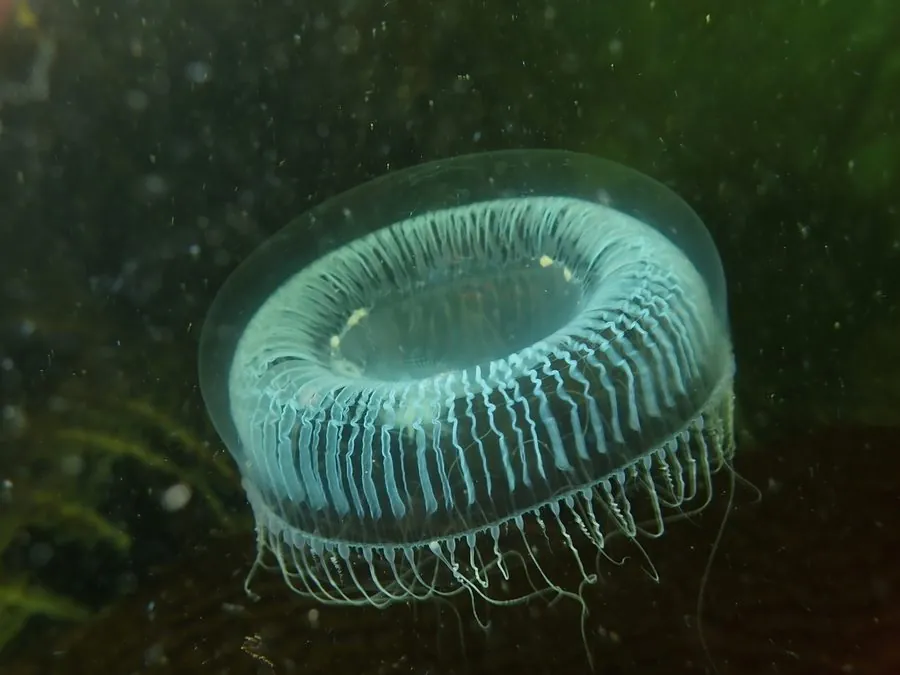

其他无脊椎动物 · 动物界
多管水母 Aequorea victoria

体盘透明、边缘密生细触手的水母，因体内发光蛋白被提取而闻名，是绿色荧光蛋白 GFP 的来源物种。
- 分类
- 门刺胞动物门纲水螅纲目软水母目科多管水母科属多管水母属
- 栖息环境
- 温带近海表层与海湾水域
- 地理分布
- 北太平洋沿岸，自阿拉斯加至加利福尼亚
- 保护级别
- 常见种，无保护需求
物种志
多管水母的伞径约五至十厘米，伞体几乎完全透明，呈扁平的盘状，边缘密生数百条细长的触手，触手可伸缩。伞缘内有一圈细密的平衡囊，伞下中央有口和四条口腕。它在水中几乎隐形，只有被光照射时边缘会泛出淡淡的蓝绿色荧光，这也是它最著名的特征。
它分布于北太平洋沿岸，从阿拉斯加至加利福尼亚，栖息在温带近海表层，随海流漂动，以小型甲壳类和浮游生物为食，用触手上的刺细胞捕猎。它体内含发光蛋白水母素和绿色荧光蛋白，受刺激时发出微弱的蓝光并转为绿光，科学家据此提纯的绿色荧光蛋白成为分子生物学中最重要的标记工具之一。它本身无毒，对人不构成威胁。
形态与习性
- 伞径约五至十厘米，几乎全透明
- 触手伞缘密生数百条细触手
- 发光受刺激发蓝光并转为绿光
- 关键蛋白水母素与绿色荧光蛋白 GFP
- 食性小型甲壳类与浮游生物
- 安全性无毒，对人不构成威胁
趣味知识
- 它透明得几乎看不见，只有伞缘在光下泛出一点绿。
- 从它体内提取的绿色荧光蛋白，让科学家能给细胞里的蛋白打上绿光标签。
- 它本身不蜇人，是少数可以放心靠近的水母之一。